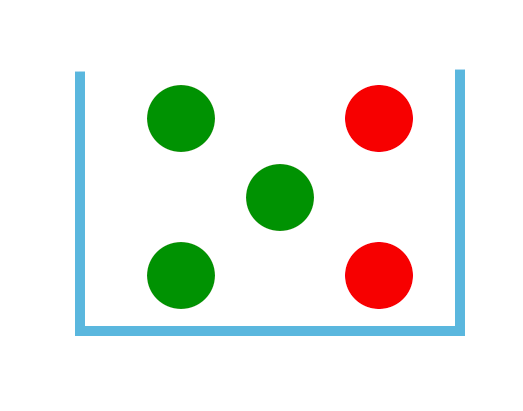

Los resultados "equiprobables" son aquellos en donde todos los posibles resultados de un evento o suceso tienen la misma oportunidad de salir por ejemplo: Al lanzar un dado todas las caras del dado tienen la misma oportunidad de salir.Otro ejemplo de esto es en una caja con pelotas de colores, todas las pelotas tienen la misma oportunidad de salir.
Por otra parte los resultados "no equiprobables" son simplemente lo contrario es decir que alguno de los posibles resultados tenga mayor oportunidad que los demás por ejemplo: Si tengo una caja con 3 pelotas verdes y 2 pelotas roja, es más probable que salga una pelota verde.
Links de ayuda